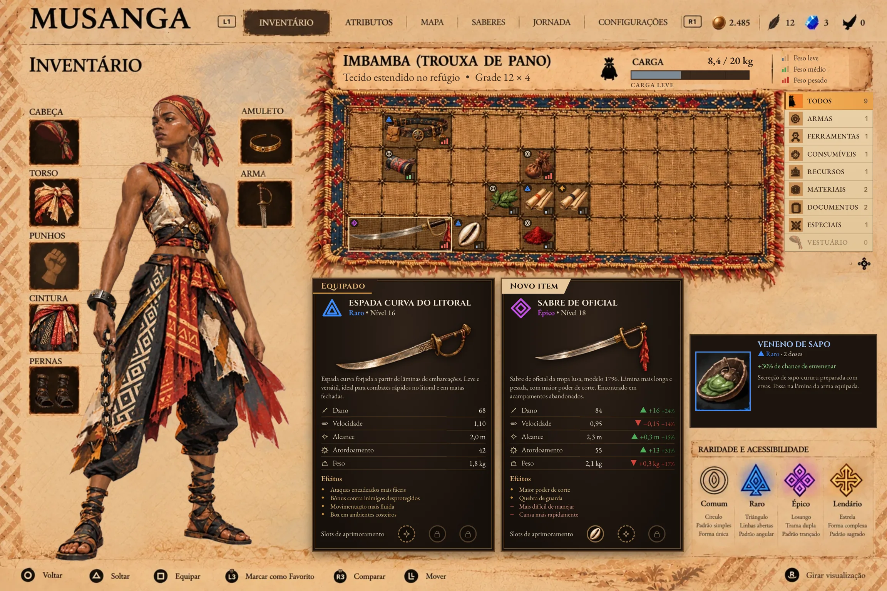
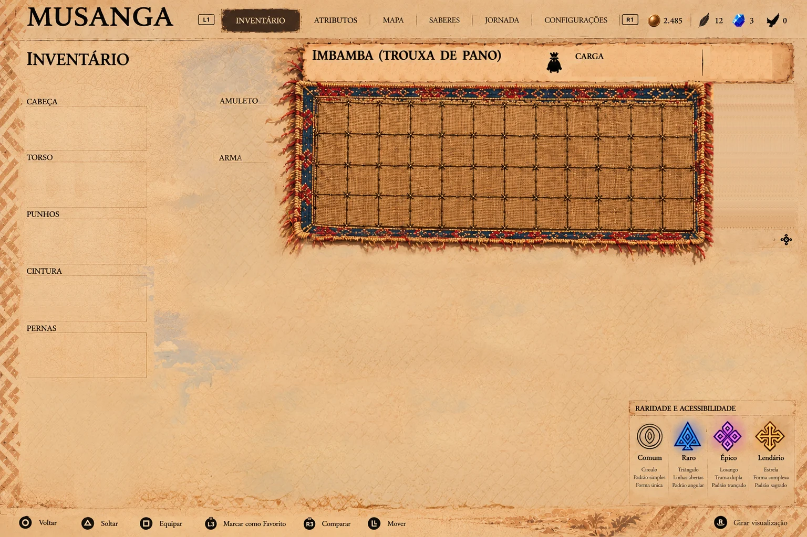
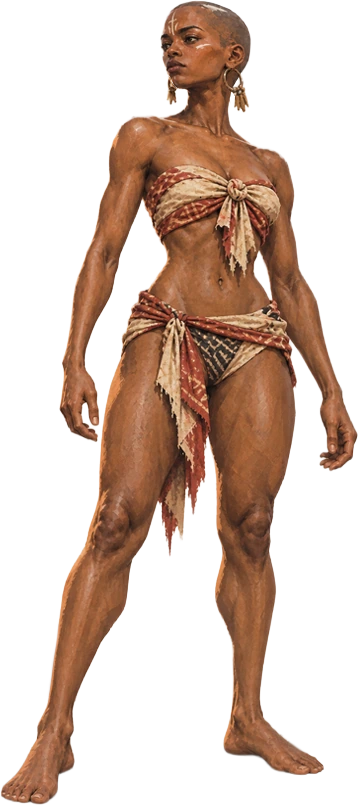
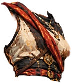
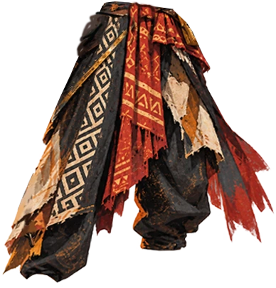
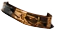
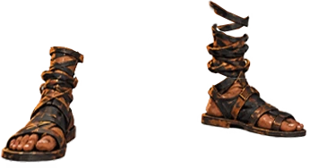
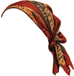
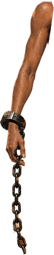
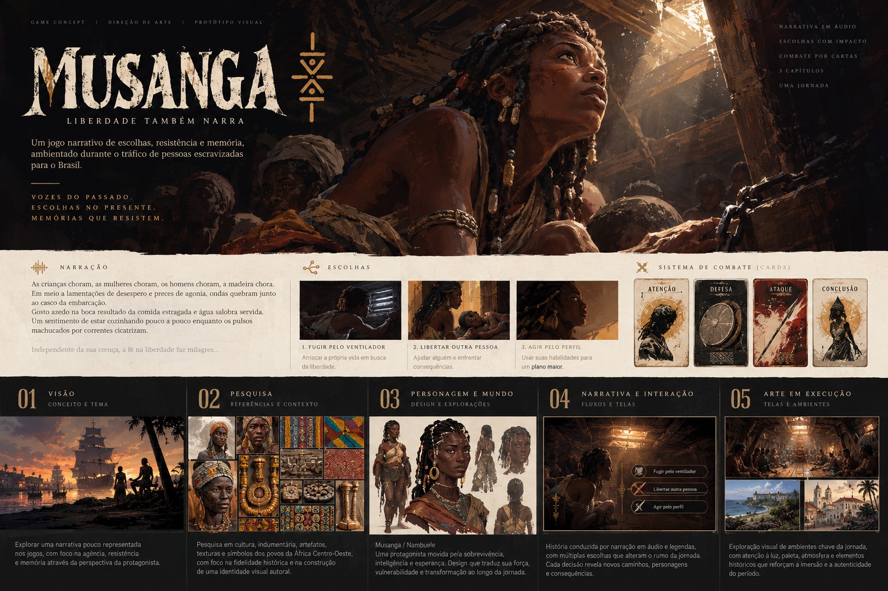

Só leva o que cabe nela.
Não há mochila mágica. O que ela veste ocupa os slots do corpo; o resto vai amarrado numa imbamba, a trouxa de pano estendida no refúgio para reorganizar a carga.
Case 16 · Game UI / UX · Inventário de alta densidade · Jogo autoral
Uma tela de inventário com dezenas de informações ao mesmo tempo: equipamento no corpo, uma trouxa de pano com peso limitado, comparação de armas e raridade. O desafio foi organizar essa densidade sem cansar quem joga, e sem depender só de cor.
Mexer na tela
Tela de inventário de Musanga montada com as camadas do PSD no estado inicial da recriação: ela vestida e a trouxa só com o resto. Arte de interface gerada por IA e editada pelo autor no Photoshop.
01 · O jogo
Musanga é trazida à força para o Brasil colônia para ser vendida como escravizada. Ela foge, e a jornada a transforma na heroína que liberta outras pessoas escravizadas.
Não há mochila mágica. O que ela veste ocupa os slots do corpo; o resto vai amarrado numa imbamba, a trouxa de pano estendida no refúgio para reorganizar a carga.
Trocar de arma, levar um documento ou carregar ervas muda o quanto ela aguenta correr. O inventário é onde o jogador decide quem ela é naquela parte da fuga.
Os objetos, nomes e pesos são propostas de jogo, sem pretensão de reconstituição histórica. As raridades não representam hierarquias culturais.
02 · Anatomia do tooltip comparativo
O item novo aparece ao lado do equipado, com a diferença já calculada. O jogador lê primeiro a raridade e o nível, depois os ganhos e perdas, e só no fim o texto.
Na arte original, algumas diferenças não batiam com os valores dos dois cards. Aqui elas são calculadas a partir dos próprios números, então nunca divergem.
03 · Grade, encaixe e carga
Tire o torço da cabeça e ele aparece na trouxa; vista a calça e ela some da trouxa. Um item nunca está em dois lugares, e a carga em quilos acompanha cada troca.
Tela em tamanho de jogo: role para o lado para ver tudo.








Tecido estendido no refúgio • Grade 12 × 4
Cada item e cada slot do corpo é um botão. Na trouxa, Enter pega o item, as setas movem, Enter solta e Esc cancela; R gira; E veste. Num slot do corpo, Enter ou E tira a peça e guarda na trouxa.
Recriação interativa da tela: o fundo, o corpo, cada peça de roupa vestida, os ícones dos slots e os itens são camadas do PSD; grade, filtros, carga e cards são HTML. A arte mostrava as roupas no corpo e na trouxa ao mesmo tempo; aqui ela começa vestida e a trouxa guarda só o resto. Nomes, pesos e descrições que a arte não detalha são propostas, assim como o filtro Vestuário e as barras da legenda de peso, que na arte usava só cor.
Vestir tira a peça da trouxa e desenha a camada no corpo; tirar faz o caminho inverso e devolve a peça para onde estava ou para o primeiro espaço livre. Sem espaço, a troca é recusada com o motivo.
O sabre ocupa três células, a calça seis. Ao arrastar, as células livres ficam claras e as ocupadas vermelhas e riscadas; girar resolve espaços apertados.
Só o que está na trouxa pesa nela. Cada item marca a classe de peso com uma, duas ou três barras, e a barra de carga muda de faixa em 50% e 80%, sempre com o valor em quilos.
O filtro esmaece o que não interessa em vez de reorganizar a trouxa. O jogador não perde a memória espacial de onde cada coisa estava.
A ficha do item (nome, raridade, pegada, peso, atributos) é uma linha de tabela, igual para todo jogador. A instância guarda só o que muda na partida: onde o item está (uma célula da trouxa ou um slot do corpo, nunca os dois), rotação e engastes. O balanceamento mexe numa linha; o save grava pouco.
ItemDef sabre_oficial
raridade épico nível 18
pegada 3 × 1 peso 2,1 kg
classe armas slot arma
slots 3 (1 bloqueado)
ItemInstance
def sabre_oficial
local imbamba x 0 · y 3 · 0°
engastes [búzio, —, 🔒]
# local: imbamba (x, y, rotação) ou corpo (slot)04 · Acessibilidade e daltonismo
Cada raridade tem quatro sinais que não dependem de cor: nome, forma do ícone, padrão gráfico e um tipo de partícula. Troque a visão abaixo e veja o que sobrevive.
05 · Sistema visual
A tela parece um objeto do mundo: papel envelhecido, trouxa de pano bordado, molduras de couro. A cor forte fica reservada para o que precisa ser lido rápido.
Imbamba
Cinzel · títulos e nomes de itemTecido estendido no refúgio
EB Garamond · descrições e atributos
06 · Escopo e próximos passos
A recriação mostra o comportamento que a arte só sugere. O que falta é jogo de verdade nas mãos de quem joga.
Vestir e tirar com o corpo em camadas, arrastar, girar, colidir, filtrar e comparar, com teclado e mouse, e a simulação de daltonismo.
Teste de tempo de decisão na troca de arma, legibilidade a três metros de uma TV, navegação completa por controle e revisão de sensibilidade do tema com pessoas da área.
Tabela de itens como fonte única, autoencaixe para quem tem pressa e a mesma comparação nos outros slots do corpo.
Antes desta tela, o sistema foi testado num protótipo funcional de baixa fidelidade ↗, com grade, autoencaixe e atalhos.